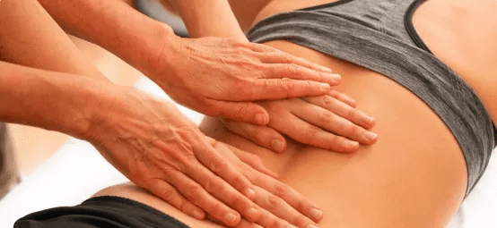
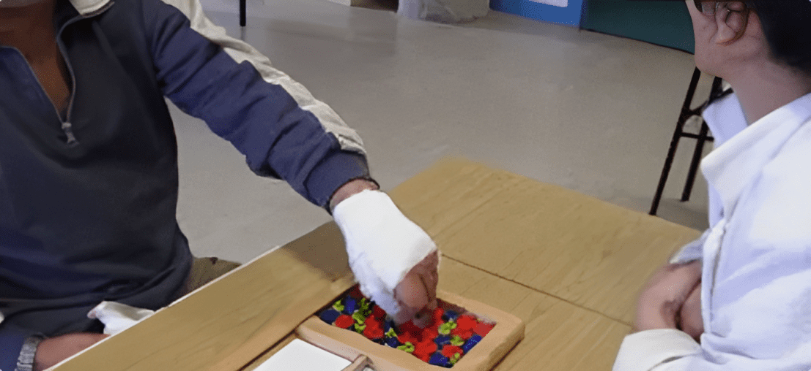
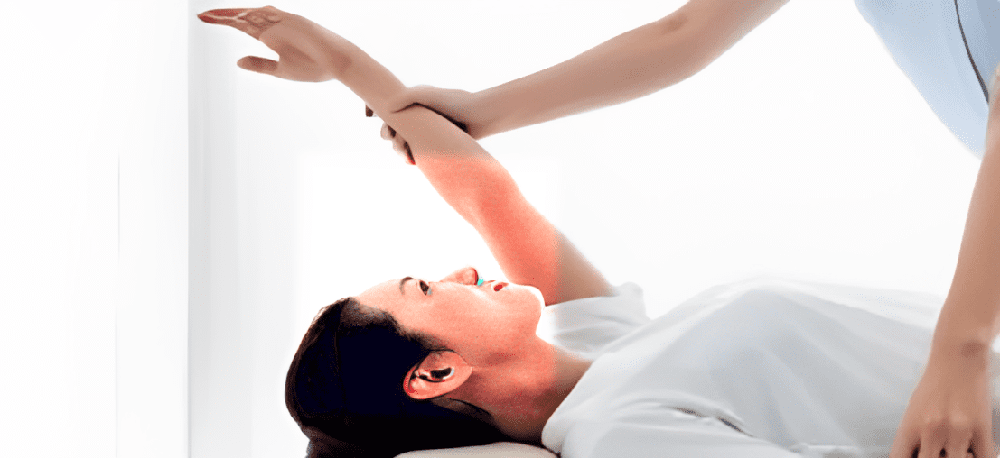
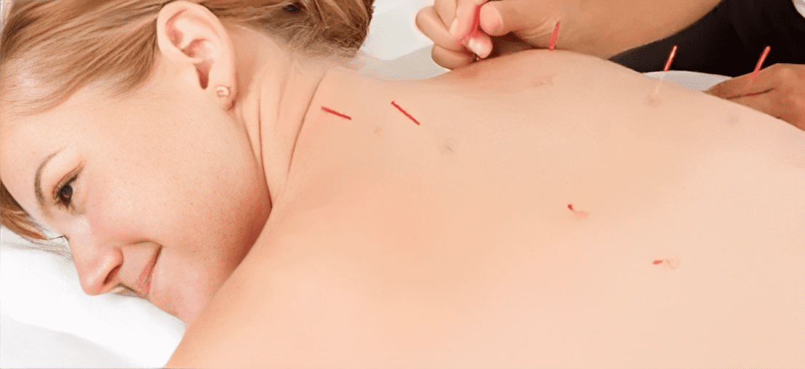

Vous avez besoin d’une évaluation ou d’une traitement en physiothérapie? Consultez un( e ) physiohérapeut ( e )dans le confort et sécurité de votre foyer. Une manière simple, efficace et sécuritaire de poursuivre vos traitements. La téléréadaptation est couverte par la SAAQ, la CNESST et la plupart des assureurs privés.
Téléréadaptation
Vous avez besoin d’une évaluation ou d’une traitement en physiothérapie? Consultez un( e ) physiohérapeut ( e )dans le confort et sécurité de votre foyer. Une manière simple, efficace et sécuritaire de poursuivre vos traitements. La téléréadaptation est couverte par la SAAQ, la CNESST et la plupart des assureurs privés.
Des services axés sur vos besoins et votre réalité
Communiquez avec nous pour tout besoin non urgent ou urgent (douleur intense, difficulté à vous déplacer, engourdissements dans un membre, blessure à la suite d’un accident, commotion cérébrale, référence médicale CNESST ou la SAAQ).

Physiothérapie
La physiothérapie vous aide à recouvrer, à maintenir ou à améliorer votre mobilité, au moyen d’une variété de traitements, dont les techniques manuelles, les exercices et l’électrothérapie.

Ergothérapie
La physiothérapie vous aide à recouvrer, à maintenir ou à améliorer votre mobilité, au moyen d’une variété de traitements, dont les techniques manuelles, les exercices et l’électrothérapie.
Massothérapie
La massothérapie est l’application d’un ensemble de techniques manuelles sur les différentes parties du corps qui visent le mieux-être des personnes et une relaxation profonde.

Ostéopathie
L’ostéopathie repose sur l’idée que les manipulations du système musculosquelettique et myofascial permettent de soulager certains troubles fonctionnels.

Acupuncture
L’acupuncture est une des branches de la médecine traditionnelle chinoise, basée sur l’implantation et la manipulation de fines aiguilles en divers points du corps à des fins thérapeutiques.
Massothérapie
La massothérapie est l’application d’un ensemble de techniques manuelles sur les différentes parties du corps qui visent le mieux-être des personnes et une relaxation profonde.